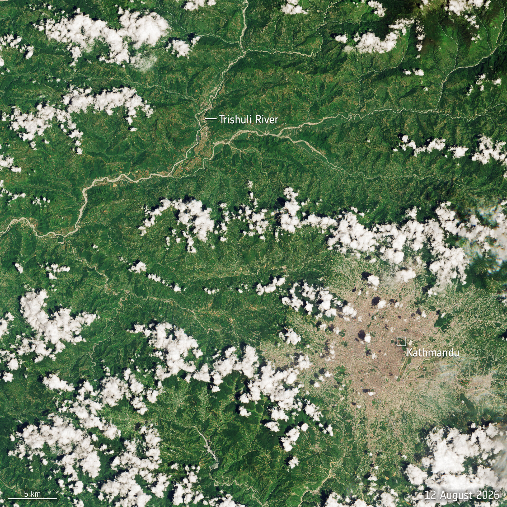

01 / THE EVENT
A disaster measured in more than numbers.
The 25–26 August 2026 flash-flood and mass-movement event caused severe damage in Rasuwa District. This project focuses specifically on AOI01 Syapru Besi and translates the mapped damage assessment into an accessible analytics story.
The underlying EMSR927 grading products were produced from post-event satellite imagery and photo-interpretation. The assessment is rapid and imagery-based, so it should not be treated as a complete ground-survey inventory.
Source: Copernicus Emergency Management Service (EMSR927), accessed through UNESCO IHP-WINS.

Satellite imagery: ESA / Copernicus Sentinel-2